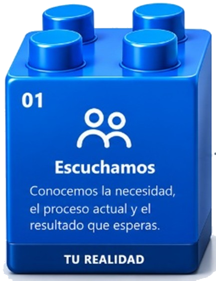
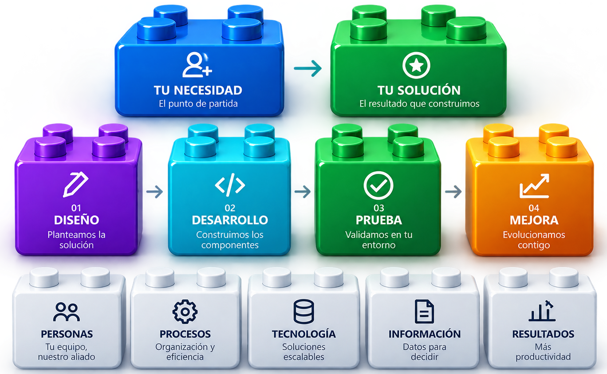
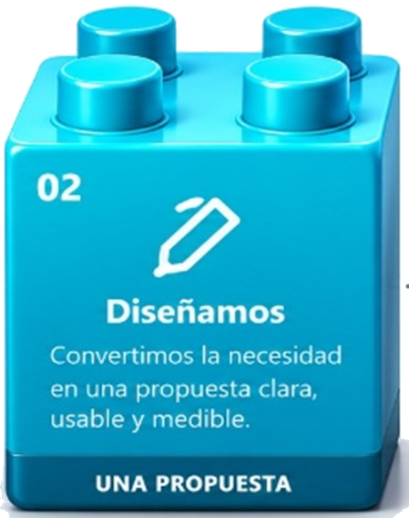
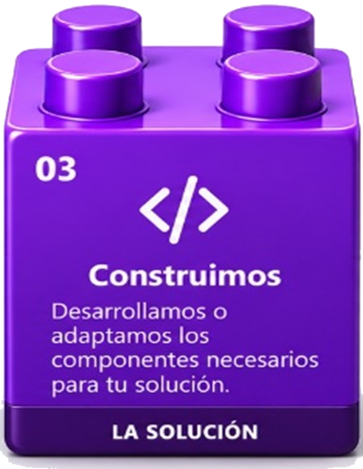
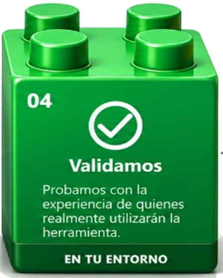
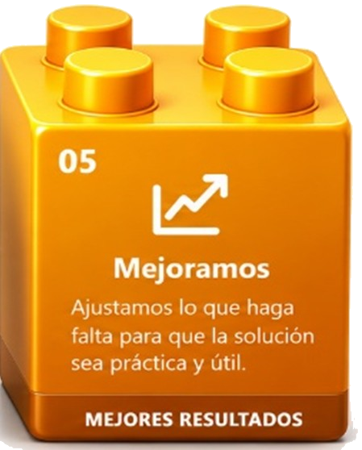

DESARROLLO DE SOFTWARE Y SOLUCIONES A LA MEDIDA
Tu necesidad.
Tu necesidad.
Nuestra construcción.
No tienes que adaptarte a un software rígido. Cuéntanos qué necesitas, cómo trabajas y qué quieres mejorar; construimos contigo una solución práctica, amigable y pensada para tu realidad.
✓ Soluciones a la medida
✓ Procesos más eficientes
✓ Menos tiempo en tareas repetitivas
✓ Experiencias de uso amigables

CH
Construimos bloque a bloque.El cliente define la necesidad; TECCHNEX construye la solución.
NUESTRA PROPUESTA
Primero entendemos.
Primero entendemos.
Después construimos.
Partimos de tu operación real, de las personas que usarán la solución y del resultado que necesitas conseguir.




DE LA NECESIDAD A LA SOLUCIÓN
Tu necesidad puede convertirse en una solución.
No necesitas saber qué software comprar. Necesitas saber qué quieres solucionar, mejorar o transformar.
CUÉNTANOS QUÉ NECESITAS
Nosotros construimos contigo.
Puedes llegar con una idea, un problema o una herramienta que ya existe y necesita mejorar. Escuchamos tu realidad y definimos contigo la mejor forma de convertirla en una solución tecnológica práctica, amigable y pensada para tu operación.
¿Qué quieres mejorar?
Tengo una idea
Quiero convertir una idea en una herramienta de software que pueda utilizar mi equipo o mi negocio.
Tengo un problema
Hay un proceso que consume demasiado tiempo, recursos o esfuerzo y necesita una mejor solución.
Ya tengo algo y quiero mejorarlo
Existe una herramienta o proceso, pero no se adapta completamente a la forma en que trabajas.
¿CÓMO PODEMOS EMPEZAR?
Partimos de lo que tengas.
NECESIDAD
→
DISEÑO
→
DESARROLLO
→
VALIDACIÓN
→
SOLUCIÓN
Cuéntanos tu necesidad →
TECCHNEX, PIEZA POR PIEZA
Una plataforma. Múltiples soluciones.
Conectamos ideas, procesos y tecnología para construir herramientas útiles para necesidades reales. Cada solución es una pieza que puede integrarse a un entorno más eficiente y seguro.
Ideas que se conectan
Diseñamos cada componente para que tenga un propósito claro.
Una identidad, múltiples posibilidades
Una marca que representa tecnología, seguridad, eficiencia y crecimiento.
SIN UN SOLO NICHO
La necesidad define el proyecto.
No importa el sector. Entendemos tu realidad y construimos una solución alrededor de tus necesidades.
🛡️Seguridad
✈️Turismo
🏭Industria
🏢Servicios
🎓Educación
🌱Otros
¿QUÉ QUEREMOS LOGRAR?
Menos tiempo
Reducimos tareas repetitivas y pasos innecesarios.
Más eficiencia
Aprovechamos mejor recursos e información.
Más productividad
Facilitamos el trabajo y mejoramos resultados.
PREGUNTAS FRECUENTES
Construimos contigo, no por encima de ti.
¿Necesito tener conocimientos de programación para utilizar las soluciones de TECCHNEX?
No. Nuestro propósito es crear soluciones tecnológicas prácticas y fáciles de utilizar. Tú conoces tu necesidad y la forma en que trabajas; nosotros te ayudamos a convertir esa necesidad en una herramienta que facilite tus procesos. Te acompañamos para que puedas aprovechar la solución sin tener que aprender a programar.
¿Tengo que comprar uno de sus productos?
No necesariamente. Podemos partir de una solución base, adaptarla o construir algo nuevo según lo que necesites.
¿Puedo participar en el diseño?
Sí. La experiencia de quien utilizará la solución es parte fundamental del proceso de diseño, prueba y mejora.
¿TECCHNEX trabaja solo para seguridad?
No. La seguridad es uno de nuestros campos de experiencia, pero nuestra propuesta está orientada al desarrollo de soluciones de software para necesidades de distintos sectores.
CUÉNTANOS TU NECESIDAD
¿Qué quieres construir?
No necesitas tener la solución definida. Cuéntanos tu necesidad, tu problema o tu idea. Nosotros te ayudamos a convertirla en una solución tecnológica.
PERSONAS
PROCESOS
TECNOLOGÍA
INFORMACIÓN
+
TU PROYECTO
El próximo bloque de TECCHNEX
El próximo bloque puede ser el tuyo.